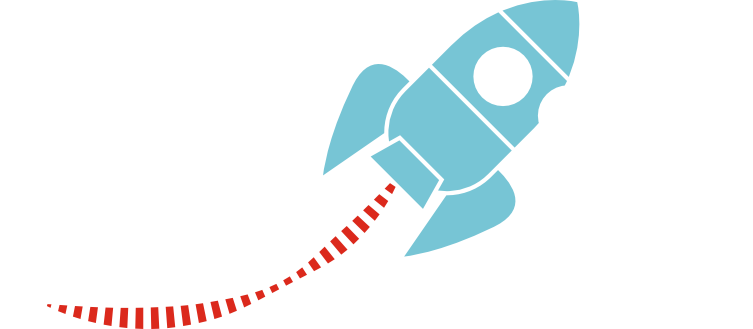

Heurtaux Audrey
ÉTUDIANTE EN BUT INFORMATIQUE
" Choisissez un travail que vous aimez et vous n'aurez pas à travailler un seul jour de votre vie. "
Étudiante de 20 ans, actuellement en BUT 3 à l'IUT de Lille. Je suis le parcours "réalisation d'applications : conception, développement, validation" et suis à la recherche d'une alternance de 2ans pour ma poursuite d'etudes
Compétences
-

Developpement
Java/Python/JavaScript -

Developpement Web
HTML5/CSS/JAVA EE/Spring/PHP/Node.js/React/Redux/Mobx -
Bases de données
PostgreSQL/H2/MongoDb/Redis/Cassandra/Access -

Langues
Français (C2) /Anglais (B2) -
Outils collaboratifs
Git/Trello -

Travail en équipe
Agile/Trello/Cycle en V
Qualités

-

Dynamique
Animatrice depuis 2020, je suis pleine de dynamisme et d'enthousiasme.
-
À l'écoute
Bienveillante et empathique, je suis toujours à l'écoute de mon entourage.
-

Autonome
Depuis mon enfance, avec les classes à deux niveaux, je suis de nature autonome, l'apprentissage en autodidacte de la guitare m'a aussi poussé à le devenir.
À propos de moi
Je m'appelle Audrey Heurtaux, j'ai 20 ans et je suis en troisième année de BUT informatique parcours "réalisation d'applications : conception, développement, validation".
Passionnée par le domaine de l'informatique depuis de nombreuses années, c'est à 14 ans que j'installe Ubuntu, poursuivant avec la spécialité Numérique et Science de l'Informatique au lycée, c'est tout naturellement que je me suis dirigée vers une formation qualifiante telle que le BUT.
Diplomes et Formations
-
BUT
2022 , IUT A Université de Lille, Villeneuve d'asqBUT-2 entierement validé, j'ai effectué mon stage de deuxième année en Erasmus en Grece
-
SSI
2022 , Nero-Sport Diving CenterJ'ai obtenu mon diplome de plongé de niveau 1
-
Baccalauréat Général Mathématiques, Numérique et Sciences de l'informatique
2021 , St Rémi, RoubaixBaccalauréat mention assez bien spécialité Mathématiques et Numérique et Sciences de l'informatique avec l'option Science+, au lycée St Rémi. J'ai choisi la spécialité NSI, car je voulais apprendre au plus vite ce qui me passionnait vraiment, c'est cette spécialité qui m'a orienté vers des études en informatique.
-
Brevet d'Aptitude aux Fonctions d'Animateur
2021, CEMEA, LilleJ'ai obtenu mon BAFA accueil des enfants en situation de handicap en juillet 2021. J'ai choisi la spécialité "accueil des enfants en situation de handicap ", car l'inclusion est une valeur importante pour moi que je voulais appliquer dans mon travail.
Expériences
-
Agent d'accueil
Juillet 2022 - Avril 2023
J'ai travaillé au Musée La Piscine, je veille au bon fonctionnement du musée et je guide les visiteurs, ce travail me permet de me cultiver tout en gardant un contact humain.
-
Animatrice
2020 - 2022
J'ai été animatrice pendant 2ans pendant les vacances scolaire. J'ai eu la chance de changer d'environnement à chaque période ce qui m'a permis de travailler avec des gens géniaux et de rencontrer de merveilleux enfants.
Mes projets
Loisirs
-
Sport
Grande sportive, je ne peux pas passer plus de trois jours sans sport.
La boxe a animé ma vie pendant 3 ans. J'ai repris le sport grâce au SUAPS, qui m'a fait découvrir de nombreux sport comme l'escalade. C'est grâce à cela que j'ai maintenant mon abonnement annuel d'escalade. -
Astrologie
"Donne-moi ton signe et je te dirais qui tu es."
Non, en fait, c'est plus compliqué que ça, mais il ne vaut mieux pas en parler, je ne saurais plus m'arrêter. -
Plantes
Je suis prête à redécorer vos bureaux de verdure.
Je remercie mes copines de m'avoir acheté ma première plante, j'en ai maintenant 27. -
Peinture
Si j'en crois ma mère, j'ai ma place au musée.
N'hésitez pas à commander, je passe le peu de temps qu'il me reste à me tordre le dos sur une table trop petite pour peindre de magnifiques tableaux à la bombe.